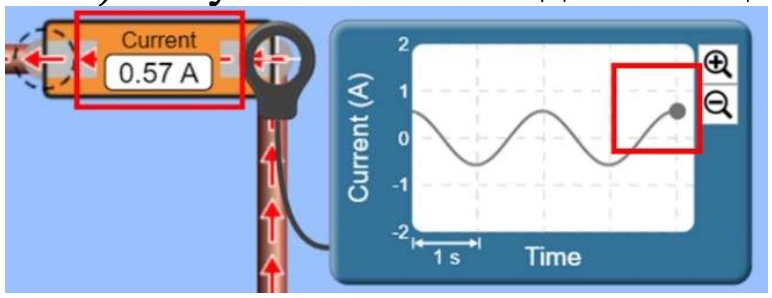
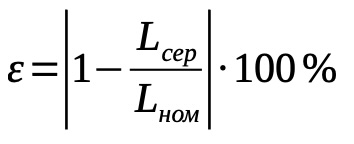

Мета: експериментально визначити індуктивність котушки та порівняти із
номінальним значенням.
Обладнання: інтерактивна симуляція PhET (регульоване джерело змінної
напруги, вольтметр і амперметр змінного струму, котушка змінної індуктивності,
осцилографи, ключ, з'єднувальні дроти).
Впишіть ваш клас
Впишіть ваше прізвище та ім'я
Хід роботи
Теоретичні відомості
Повний опір кола, яке містить активний, індуктивний
опори і ємнісний опори, обчислюють за формулою:
Якщо ємнісний опір XC відсутній, а активний опір R
набагато менший за індуктивний опір котушки XL, то
ємнісним і активним опором можна знехтувати. Тоді повний опір кола дорівнює:
Для визначення повного опору Z можна використовувати формулу закону Ома для
ділянки кола, вимірявши амплітудне значення змінної напруги на кінцях котушки
U max і амплітудне значення сили струму I max в ній:
Враховуючи вираз , індуктивність котушки можна визначити за
формулою:
2. Натисніть кнопку Advanced та за допомогою повзунка
встановіть опір джерела змінної напруги 1 Ом (Source Resistance).
3. Складіть електричне коло (рис. 1), з’єднавши між
собою, такі елементи кола: регульоване джерело
змінної напруги ; дріт (всі елементи
з’єднуємо дротом); амперметр ; ключ ;
котушка змінної індуктивності (за рахунок зміни
кількості витків котушки) ; вольтметр .
Рисунок 1
4. Для візуального сприймання інформації
підключіть до котушки осцилограф для
спостерігання змінної електричної
напруги та в будь-яку точку кола
осцилограф для спостерігання змінної
сили струму (рис. 2).
Рисунок 2
Експеримент
Результати вимірювань і обчислень відразу заносьте до таблиць
1. Визначте частоту зміни напруги в мережі. Для цього в електричному колі
натисніть на регульоване джерело змінної напруги та в меню, що з’явилося
знизу зніміть покази частоти зміни напруги в мережі
. Результат занесіть до
таблиці. При проведенні всіх дослідів залишайте частоту незмінною.
2. Замкніть ключ . Впродовж 5-10 секунд спостерігайте за зміною показів
усіх приладів. Натисніть на кнопку паузи
3. Зніміть покази вольтметра. Натискайте на кнопку вперед і спостерігайте,
як точка на графіку рухається доти, доки не досягне найвищого положення, яке буде
відповідати амплітудному (максимальному) значенню напруги Umax (рис. 3).
Результат занесіть до таблиці.
Рисунок 3
4. Аналогічно пункту третьому зніміть покази амперметра. Натискайте на кнопку
вперед і спостерігайте, як точка на графіку рухається доти, доки не досягне
найвищого положення, яке буде відповідати амплітудному (максимальному)
значенню струму I max (рис. 4). Результат занесіть до таблиці.

Рисунок 4
5. Збільшіть напругу на регульованому джерелі змінної напруги та зніміть
покази амперметра та вольтметра як описано в пунктах 2-4. Для цього в
електричному колі натисніть на регульоване джерело змінної напруги та в
меню, що з’явилося знизу за допомогою повзунка збільште значення напруги на
10 – 30 В . Натисніть на
кнопку плей та повторіть дії описані в пунктах 2-4. Щоб правильно
відображалися графіки напруги та сили струму можете змінювати їх масштаб за
допомогою кнопок
6. Ще двічі змініть в сторону збільшення напругу на джерелі струму і зніміть
покази амперметра і вольтметра відповідно пунктів 2-4. Результати занесіть до
таблиці.
Таблиця 1
№ досліду
Частота
зміни
напруги
в мережі
ν, Гц
Амплітудне
значення
змінної
напруги
Umax, В
Амплі-
тудне
значення
сили
струму
Imax, А
Повний
опір
Z, Ом
Індукти-
вність
котушки
L, Гн (H)
Середнє
значення
індукти-
вності
котушки
Lсер, Гн
Відносна
похибка
вимірювання
індуктивності
ε, %
1
2
3
4
Опрацювання результатів експерименту
1. Для кожного досліду обчисліть повний опір і запишіть ці значення у таблицю:
2. За результатами обчислень повного опору Z розрахуйте для кожного досліду
індуктивність котушки і запишіть ці значення у таблицю:
3. Визначте середнє значення індуктивності котушки і запишіть це значення у
таблицю:
4. Визначте номінальне значення індуктивності котушки Lном. Для цього в
електричному колі натисніть на котушку
зніміть покази індуктивності котушки Lном
5. Обчисліть відносну похибку вимірювань індуктивності котушки і запишіть це
значення у таблицю:

Аналіз експерименту та його результатів
Проаналізуйте експеримент і його результати. За результатами експерименту сформулюйте і запишіть висновок, у якому зазначте:
1) які фізичні величини ви вимірювали безпосередньо і яку обчислювали;
2) яким є результат обчисленої величини;
3) чи залежить індуктивність котушки від
поданої напруги;


 та за допомогою повзунка
та за допомогою повзунка

 ; дріт (всі елементи
з’єднуємо дротом); амперметр ; ключ ;
котушка змінної індуктивності (за рахунок зміни
кількості витків котушки) ; вольтметр .
; дріт (всі елементи
з’єднуємо дротом); амперметр ; ключ ;
котушка змінної індуктивності (за рахунок зміни
кількості витків котушки) ; вольтметр .

 . Результат занесіть до
таблиці. При проведенні всіх дослідів залишайте частоту незмінною.
. Результат занесіть до
таблиці. При проведенні всіх дослідів залишайте частоту незмінною. і спостерігайте,
як точка на графіку рухається доти, доки не досягне найвищого положення, яке буде
відповідати амплітудному (максимальному) значенню напруги Umax (рис. 3).
Результат занесіть до таблиці.
і спостерігайте,
як точка на графіку рухається доти, доки не досягне найвищого положення, яке буде
відповідати амплітудному (максимальному) значенню напруги Umax (рис. 3).
Результат занесіть до таблиці.